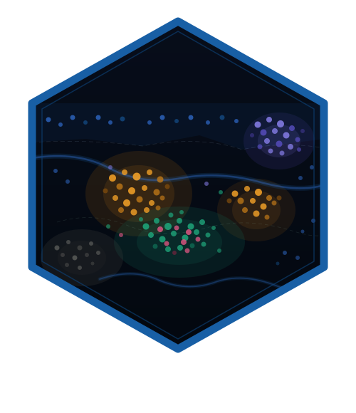

The SpatialCellData Object
Source:vignettes/phenoscapR-02-object-model.Rmd
phenoscapR-02-object-model.Rmd
Overview
The SpatialCellData S4 class is the
central data container in phenoscapR. It stores all information about a
spatial biology experiment in a single object:
| Slot | Type | Contents |
|---|---|---|
counts |
numeric matrix | Raw marker intensities (cells × markers) |
data |
numeric matrix | Normalised intensities (filled by NormaliseData()) |
coords |
data.frame | Spatial coordinates (x, y columns) |
meta_data |
data.frame | Per-cell metadata (phenotype, sample ID, QC flags, …) |
project |
character | Project / experiment name |
spatial |
list | Results from spatial analysis functions |
This vignette walks through constructing, inspecting, and subsetting
a SpatialCellData object.
Construction
From raw matrices
Use CreateSpatialObject() when you already have a counts
matrix and a coordinates table:
library(phenoscapR)
set.seed(1)
n <- 200
counts <- matrix(
abs(rnorm(n * 4, mean = 500, sd = 200)),
nrow = n,
dimnames = list(NULL, c("CD3", "CD8", "CD20", "PanCK"))
)
coords <- data.frame(
x = runif(n, 0, 1000),
y = runif(n, 0, 1000)
)
obj <- CreateSpatialObject(counts, coords, project = "demo")
obj
#> A SpatialCellData object
#> 200 cells across 1 sample
#> Markers: CD3, CD8, CD20, PanCK
#> Normalised: FALSE
#> Project: demoFrom CSV files
Use ReadSpatial() to read one or more CSV files and
return a SpatialCellData object directly:
obj <- ReadSpatial("path/to/segmentation.csv", sample_id = "sample1")
# Or read a whole directory
obj <- ReadSpatial("path/to/csv_dir/")Inspecting the Object
# Dimensions: cells × markers
dim(obj)
#> [1] 200 4
# Cell count and marker names
NCells(obj)
#> [1] 200
NMarkers(obj)
#> [1] 4
Markers(obj)
#> [1] "CD3" "CD8" "CD20" "PanCK"
# First few rows of metadata
head(Meta(obj))
#> cell_id sample_id
#> 1 1 sample1
#> 2 2 sample1
#> 3 3 sample1
#> 4 4 sample1
#> 5 5 sample1
#> 6 6 sample1
# First few rows of coordinates
head(Coords(obj))
#> x y
#> 1 138.53856 61.60942
#> 2 47.52457 355.32135
#> 3 33.91887 577.03775
#> 4 916.08902 535.03156
#> 5 840.20039 604.27283
#> 6 178.87142 486.14898Accessing Expression Data
# Raw counts
raw <- GetData(obj, slot = "counts")
raw[1:3, ]
#> CD3 CD8 CD20 PanCK
#> [1,] 374.7092 581.8804 714.8882 431.7866
#> [2,] 536.7287 837.7747 879.1310 800.4849
#> [3,] 332.8743 817.3177 379.4005 605.6615
# After normalisation, use slot = "data"
obj <- NormaliseData(obj, method = "zscore")
norm <- GetData(obj, slot = "data")
norm[1:3, ]
#> CD3 CD8 CD20 PanCK
#> [1,] -0.7125125 0.3645126 1.050439 -0.2286880
#> [2,] 0.1594060 1.6459558 1.826956 1.4797676
#> [3,] -0.9376502 1.5435133 -0.535701 0.5770049Working with Metadata
Metadata columns are accessible with $ and
[[:
# After phenotyping
obj <- PhenotypeCells(obj, thresholds = list(CD3 = 0, CD8 = 0,
CD20 = 0, PanCK = 0))
head(obj$phenotype)
#> [1] "CD8+/CD20+" "CD3+/CD8+/CD20+/PanCK+" "CD8+/PanCK+"
#> [4] "CD3+/PanCK+" "CD3+" "CD8+"
head(obj[["sample_id"]])
#> [1] "sample1" "sample1" "sample1" "sample1" "sample1" "sample1"Idents() returns the active identity — phenotype labels
if set, otherwise sample identities:
Next Steps
- Getting Started — end-to-end workflow with the low-level data.table API
- Advanced Spatial Analysis — Ripley’s K, neighbourhood enrichment, Moran’s I, and more